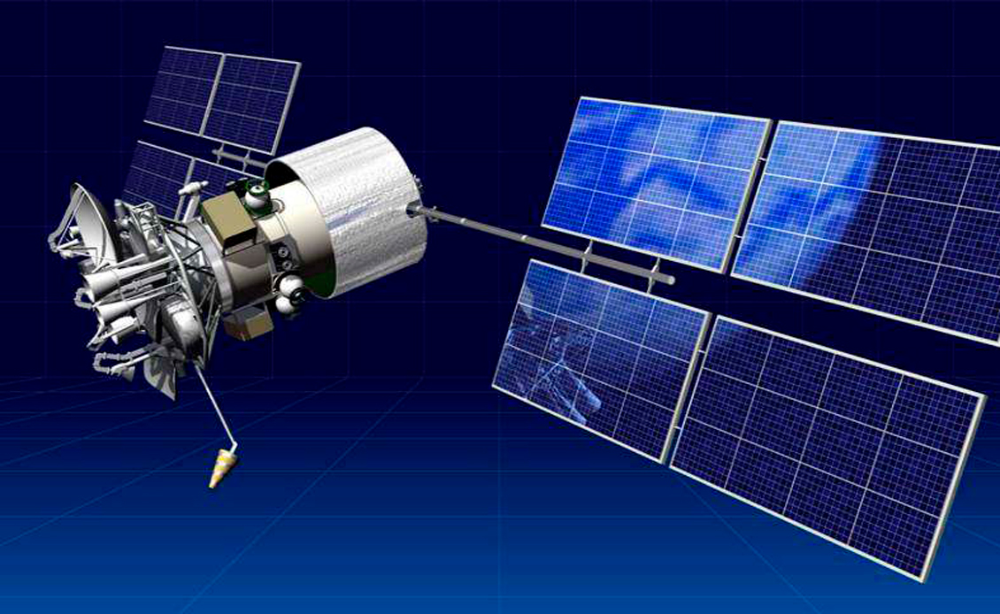

Технологии
- Трехэтапный план
- Функциональный подход
- Системная архитектура
- Автономная навигационная система
- Оптическая система анализа ситуационной обстановки
- Система координированного управления движением
- Расширение систем управления техническими средствами
- Пульт дистанционного управления
- Аппаратное обеспечение а-Нав
- Передача данных и кибербезопасность
- Мостиковый планшет
- Караванное управление
- Нормативное регулирование
Передача данных и кибербезопасность
Все системы а-Нав на борту судна и ПДУ объединены в защищенную локальную сеть, доступ к которой контролируется с использованием шифрования данных, брандмауэра для защиты периметра, контроля и ограничение сокетов.
Обмен данными между бортовым сегментом и ПДУ осуществляется с помощью беспроводной связи, на основе которого строится VPN-туннель. В зависимости от условий эксплуатации МАНС средства связи могут включать средства:
- спутниковой связи (в любых акваториях): VSAT, Inmarsat, Iridium и т.п.;
- мобильной связи (в зоне покрытия сетей мобильной связи): GPRS, CDMA, 3G, 4G LTE;
- прямой СВЧ-радиосвязи (в зоне прямой видимости между ПДУ и управляемым МАНС, например, при караванном управлении).
Канал передачи данных резервирован для обеспечения его непрерывной доступности.
Канал передачи данных между бортовыми системами и ПДУ защищен от несанкционирвоанного доступа средствами шифрования (в соответствии с ISO/IEC 27005:2018 и МАКО Rec. No. 166 - Recommendation on Cyber Resilience). Обеспечение кибербезопасности берегового центра дистанционного управления обеспечивается в соответствии с политиками информационной безопасности судоходной компании (рекомендованы к использованию BS 7799-1: 2005, ISO / IEC 17799: 2005, ISO / IEC 27001 and ISO / IEC 27002).
Обеспечение безопасности подключения к информационной сети комплекса а-Навигации (в т.ч. со стороны разработчика для выявления и устранения возможных дефектов) осуществляется следующими способами:
- организация VPN туннеля с помощью протокола L2TP + IPsec с шифрованием AES-256;
- ограничение доступа по внешнему IP из листа разрешенных соединений;
- ограничением подключения из сети Интернет: подключение инициируется с МАНС, прямое подключение из сети интернет невозможно, входящие порты закрыты;
- подключением разработчика к ПДУ, а не напрямую к системам на борту МАНС (тем самым также уменьшается нагрузка на канал передачи данных до судна и повышается безопасность непрямой работы в серверной части);
- использованием единой точки подключений, которой является маршрутизатор: подключение производится по туннелю, построенному по технологии OpenVpn с использованием сертификатов (для каждой организации-контрагента используется уникальный сертификат, защищенный паролем) и пары логин/пароль для каждого сотрудника, шифрование производится по алгоритму AES-256.
- использованием своей уникальной адресации на каждом судне/ПДУ, не пересекающейся друг с другом (разделение сетей).
Защита LAN обеспечивается следующими способами:
- Внутри локальной сети на всех устройствах отключен выход в интернет, заблокирован на уровне маршрутизатора;
- В операционных системах Windows и Linux созданы пользовательские учетные записи и присвоен пароль;
- В операционных системах Windows и Linux включен брандмауэр и файрвол, весь трафик заблокирован на вход/выход кроме служебного и устанавливаемого ПО. Включен встроенный антивирус;
- В сетевых устройствах, имеющих веб-интерфейс, изменены стандартные пароли производителя;
- Агенты системы мониторинга подключаются с учетной записью, имеющей минимально необходимые права на сервере;
- Отключены незадействованные usb порты на серверах в bios;
- Отключены незадействованные порты ethernet;
- Установлены пароли на bios;
- На сетевом хранилище NAS, активированы правила временной блокировки доступа при вводе неправильного ввода пароля, настроен «белый» список ip адресов для устройств, имеющих доступ;
- В видеокамерах настроен «белый» список ip адресов, создана учетная запись с минимально необходимым набором прав для подключения к сетевому хранилищу, отключены неиспользуемые сетевые сервисы мониторинга, отключен доступ по ssh.
Для самодиагностики систем комплекса а-Нав, получения информации о недоступности и неисправностях всех элементов, включенных в LAN, в том числе канала обмена данными между бортовыми системами и ПДУ, используется Подсистема конфигурации и мониторинга. В качестве ее программного обеспечения могут использоваться существующие на рынке системы мониторинга компьютерных сетей и оборудования, такие как Zabbix, Checkmk, HPE Openview и др.